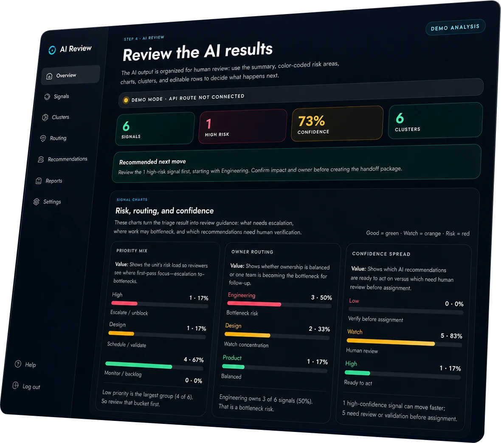
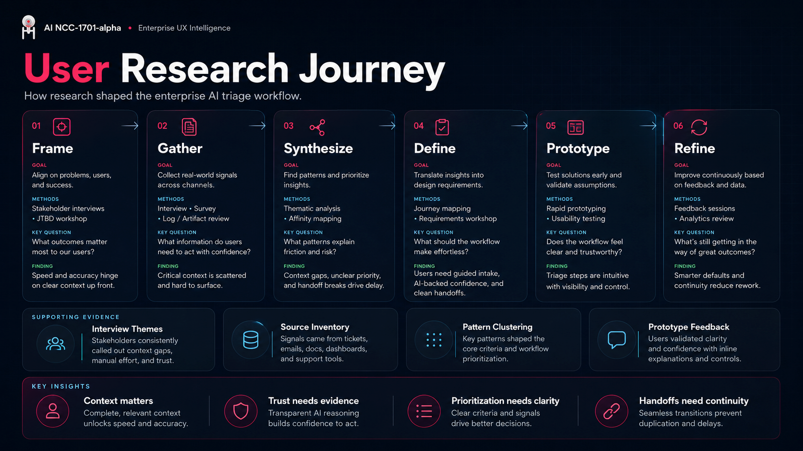
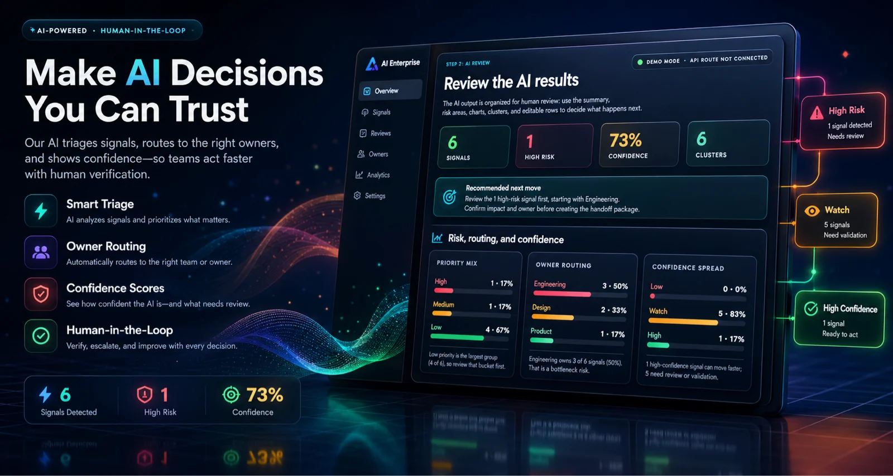
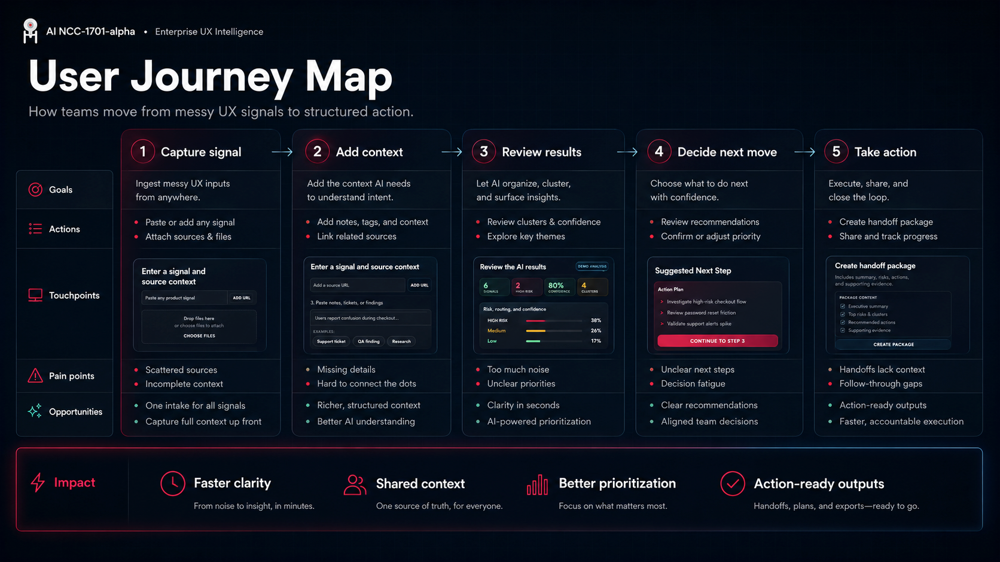
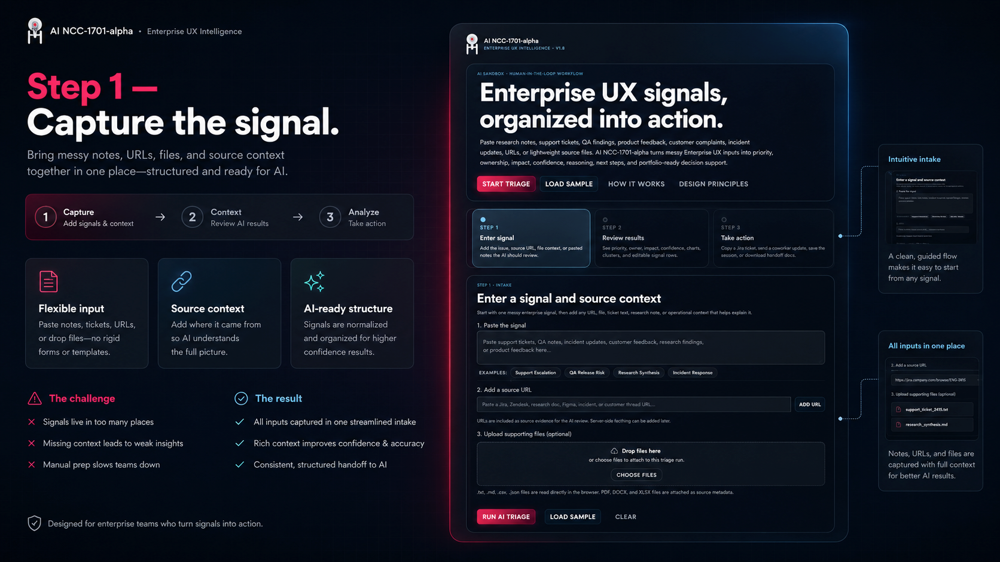
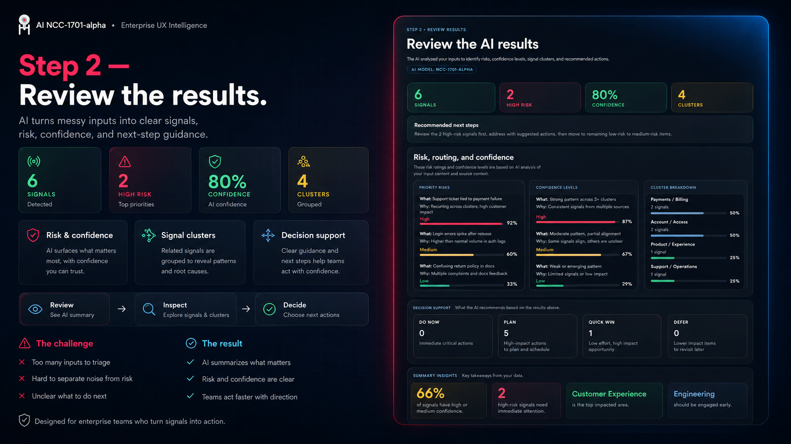

Solo Product Design Project · Enterprise AI Prototype
AI Enterprise UX Intelligence
Designing a human-in-the-loop enterprise AI product that turns fragmented signals into prioritized issues, clear ownership, and handoff-ready action.
View Prototype

My Role
Enterprise AI
- Defined the end-to-end product workflow from intake through handoff
- Designed the AI Review, Signal Charts, Decision Workspace, Pattern Detection, and UX Signal Table
- Created patterns for confidence, risk, owner routing, review states, and saved sessions
- Built a working prototype with demo fallback and live AI API support
Project Type: Independent enterprise AI product design and front-end prototyping
Tools: HTML, CSS, JavaScript, PHP, AI-assisted prototyping, browser testing, and design QA
Background
Turning fragmented evidence into accountable action.
Enterprise signals are scattered across tickets, notes, research, and requests. Teams still need to decide what matters, who owns it, how risky it is, and what happens next.
The prototype uses AI to accelerate triage while keeping every recommendation reviewable, editable, and explainable.
Problem
Enterprise signals are easy to collect—and hard to prioritize, assign, and act on.
- Important issues get buried in raw notes, tickets, files, and URLs
- Ownership is unclear across Product, Design, Engineering, Support, and Operations
- Risk and confidence are mixed together, obscuring what needs escalation or validation
- Handoff work is repetitive across email, Jira, Slack, and executive updates
The challenge was translating unstructured input into clear priority, reviewable reasoning, and usable next steps without removing human judgment.
Discovery
Designing an inspectable workflow around evidence, confidence, ownership, and action.

I structured the workflow to review the signal, inspect the recommendation, verify evidence, adjust the outcome, and create a handoff. It needed to feel like an enterprise decision workspace, not a chatbot.
- Separated AI review from human action to keep recommendations inspectable
- Made priority, owner routing, confidence, and review readiness visible
- Grouped related issues into clusters for faster review
- Added review and override patterns to preserve auditability
The key insight: confidence matters as much as priority. High-priority signals still need review when evidence or ownership is unclear.
Strategy
Use AI to accelerate analysis while preserving human accountability.

The product treats AI as a decision accelerator, with validation points from intake through handoff.
- Create a first-pass analysis of messy product context
- Show why signals were routed, prioritized, clustered, or flagged
- Make uncertainty visible through confidence scores and evidence
- Turn reviewed decisions into communication-ready outputs
Solution
A guided three-step workflow from input to reviewed action.

The prototype moves through Enter Signal, Review Results, and Take Action, with clear status and next steps.
- Step 1: add a URL, files, notes, tickets, or findings
- Step 2: review priority, owner, impact, confidence, clusters, and signal rows
- Step 3: create email briefs, Jira tickets, team updates, summaries, and handoffs
- Provide fallback demo behavior when live AI analysis is unavailable
Pattern Detection
Surface duplicate groups, shared themes, and signal sources.

Clusters group related requests, failures, and product gaps so teams can prioritize patterns instead of isolated issues.
- Grouped related issues into signal clusters with confidence context
- Flagged possible duplicate groups for faster prioritization
- Linked clusters to source evidence and review actions
- Balanced summary scanning with detailed signal review
UX Signal Table
Editable rows for priority, ownership, impact, status, and evidence.

The table turns AI output into a working surface for filtering, editing, validation, and handoff planning.
- Table View supports detailed review and editing
- Board View supports status review and handoff planning
- Keeps source, risk, owner, impact, cluster, and status visible
- Records human edits and override notes
Operational Layer
Extend analysis into release, roadmap, and handoff decisions.
The operational layer helps teams decide what to escalate, defer, communicate, or monitor.
- SLA watchlist for urgent and next-cycle follow-up
- Evidence coverage showing source strength
- Release risk gate for blocked, review, or monitored states
- Roadmap candidates grouped by now, quick win, plan, or defer
- Audience-specific briefs for executive, product, engineering, support, and design teams
Impact
A functional workflow that turns fragmented signals into reviewed decisions.
- Created a three-step human-in-the-loop workflow for intake, AI review, validation, and handoff
- Made priority, ownership, impact, evidence, confidence, and next steps visible together
- Added editable rows, overrides, review states, and decision history
- Generated email briefs, Jira tickets, team updates, executive summaries, and handoff packages